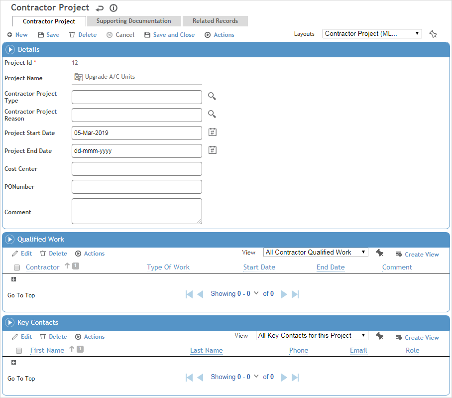

A project record can include the contractors that are qualified to work on the project, supporting documentation and notes, as well as links to findings and actions, questionnaires, or incidents associated with the project.
In the Safety menu, click Projects.
Click a link to view details of a project, or click New to enter a new project.

Enter the Name of the project, and record general information about it:
Select the Contractor Project Type and Reason.
Select the Contractor for the project, if known.
Enter Start and End dates of the project.
Record the Cost Center and PO Number for the project.
Click Save.
In the Qualified Work section, identify any contractors that have been cleared to work on this project, along with the Type of Work they are cleared for and the Start/End Dates of this clearance. The project is added to the Qualified Work section on the contractor record.
Record the Key Contacts for this project.
On the Supporting Documentation tab, capture any external documents or other notes that you want to retain about this project. For more information, see Linking or Importing a Document or Adding Notes to a Form.
The Related Records tab will display any findings and actions, questionnaires, or incidents that have been associated with this project (provided the Contractor Project field has been added to a custom layout of those records). You can also create a new related record (e.g. permit, audit, inspection, change request, etc.) associated with this project.
If using a custom layout, you may also be able to review or add letters, permits, forms, and risk assessments related to the project.
Click Save.